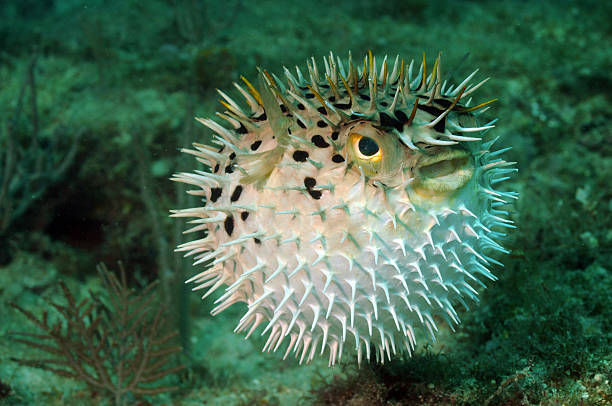
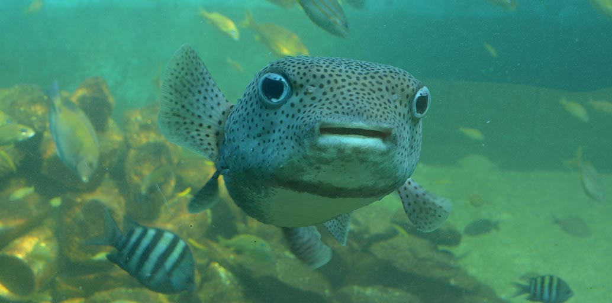
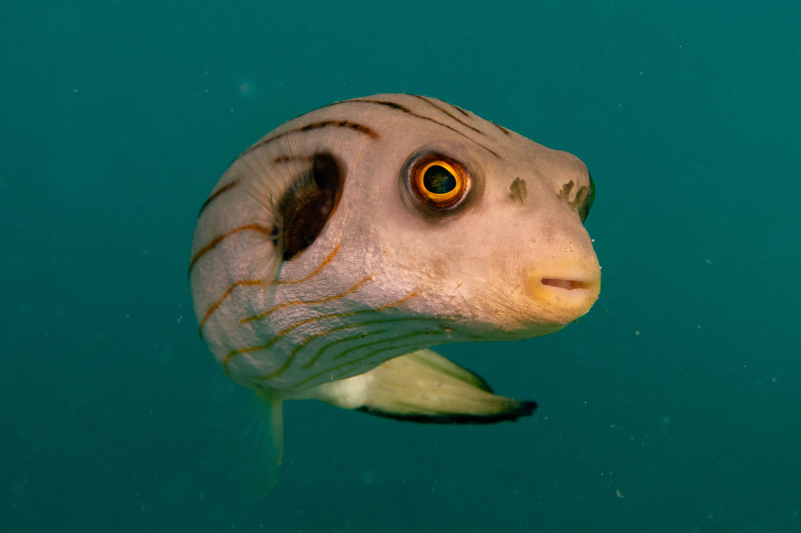

El pez globo es un pez muy particular y llamativo que vive principalmente en mares cálidos y tropicales. Su nombre viene de su habilidad para inflarse como un globo cuando se siente en peligro. Este mecanismo de defensa lo utiliza para asustar a sus depredadores, ya que al inflarse se vuelve mucho más grande y difícil de tragar. Para lograr esto, el pez globo traga agua o aire muy rápido, y su cuerpo se expande notablemente en cuestión de segundos.
Este animal pertenece a la familia de los Tetraodontidae y, aunque normalmente tiene un tamaño pequeño o mediano, cuando se infla puede parecer mucho más grande. Es importante destacar que muchos de estos peces son venenosos, ya que tienen una toxina muy fuerte llamada tetrodotoxina, que se encuentra en su piel, hígado y otros órganos. Esta toxina puede ser mortal para otros animales e incluso para los humanos, por eso no se puede comer cualquier pez globo, a menos que sea preparado por cocineros especializados como en Japón, donde es conocido como "fugu".
En cuanto a su alimentación, el pez globo come animales con conchas duras como caracoles, almejas y también erizos de mar. Sus dientes son muy fuertes y están adaptados para triturar estos alimentos. También es curioso que sus dientes crecen constantemente, así que necesita desgastarlos comiendo cosas duras para evitar que crezcan demasiado.
El pez globo se encuentra en zonas cercanas a arrecifes de coral, manglares o estuarios, y también hay algunas especies que viven en agua dulce o salobre. Aunque es un animal bonito y curioso, es mejor observarlo de lejos y no tocarlo, ya que su veneno es muy peligroso. En resumen, el pez globo es un animal fascinante tanto por su forma de defenderse como por sus características únicas.

El pez globo es conocido por su capacidad de inflarse, pero lo cierto es que esta es una acción que utiliza solo en momentos muy específicos. En su día a día, este pez se mantiene desinflado, con su tamaño habitual, que le permite moverse sin dificultad y con total normalidad. Inflarse no es algo que haga por costumbre ni por comodidad, ya que es un proceso que requiere energía y que solo activa cuando se siente amenazado o en peligro.
Cuando decide hacerlo, su cuerpo se expande rápidamente, y eso puede impresionar a cualquier posible depredador. Sin embargo, no es un estado que mantenga por mucho tiempo, ya que no le resulta cómodo ni eficiente. Por eso, la mayor parte del tiempo, el pez globo prefiere mantener la calma, nadar tranquilo y evitar cualquier situación que lo obligue a inflarse. Aunque su capacidad de defensa es sorprendente, su comportamiento cotidiano es más bien reservado y tranquilo.

A pesar de la fama que tiene por inflarse como un globo, este pez no lo hace tan seguido como muchos piensan. Esa habilidad es más bien una estrategia que utiliza solo en situaciones extremas, cuando siente que hay una amenaza cerca. En condiciones normales, el pez globo se mantiene desinflado, con un aspecto más sencillo y menos llamativo. Así puede moverse mejor, ahorrar energía y pasar desapercibido.
No necesita estar inflado para nadar ni para cumplir con sus funciones básicas. Inflarse es más bien una medida de emergencia, como una última opción cuando ya no hay otra forma de escapar. Por lo tanto, su comportamiento cotidiano es bastante tranquilo. Se desplaza sin apuro, evita conflictos y se mantiene alerta, pero sin exagerar. La imagen del pez siempre inflado es llamativa, pero en la realidad, es solo una pequeña parte de lo que realmente es.

El pez globo no es una sola especie, sino un grupo muy amplio con muchas variedades distintas. Existen decenas de especies que forman parte de esta familia, y cada una tiene sus propias características. Algunas tienen colores intensos y diseños llamativos, mientras que otras son más simples, con tonos apagados y formas menos destacadas. Hay especies pequeñas que caben en la palma de la mano, y otras que pueden crecer bastante más.
Lo interesante es que, a pesar de todas estas diferencias, todas comparten la habilidad de inflarse como mecanismo de defensa. Eso sí, no todas lo hacen con la misma frecuencia ni de la misma forma. Algunas especies pueden inflarse más rápido, otras tienen espinas que sobresalen al hacerlo, y algunas apenas cambian su forma. Esta variedad hace que el grupo de los peces globo sea muy diverso y, al mismo tiempo, muy particular. Cada especie tiene algo que la hace única, pero todas comparten esa curiosa forma de protegerse cuando se sienten en riesgo.